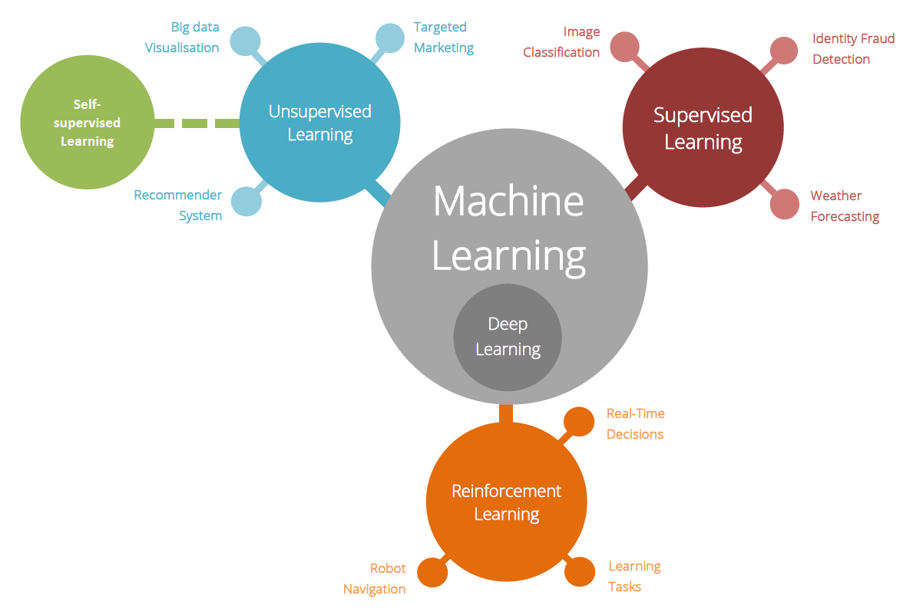

This glossary is initiated from the the website of Council of Europe. It contains the AI-related terms for general audience and AIEdu team will regularly update and maintain this list with new entries and also descriptive videos.
ALGORITHM
Finite suite of formal rules (logical operations, instructions) allowing to obtain a result from input elements. This suite can be the object of an automated execution process and rely on models designed through machine learning.
ARTIFICIAL INTELLIGENCE (AI)
A set of sciences, theories and techniques whose purpose is to reproduce by a machine the cognitive abilities of a human being. Current developments aim to be able to entrust a machine with complex tasks previously delegated to a human.
However, the term artificial intelligence is criticized by experts who distinguish between “strong” AI (who are able to contextualize very different specialized problems completely independently) and “weak” or “moderate” AI (who perform extremely well in their field of training). According to some experts, “strong” AI would require advances in basic research to be able to model the world as a whole and not just improvements in the performance of existing systems.
Backpropagation Think of an AI model as a box with an input, an output, and multiple dials on the side (see What is an AI-Model). This could be text in and text out, as in the case of ChatGPT, or it could be text in and image out, as in the case of DALL-E, or any other form of input and output.
Backpropagation is a particular way of determining how to change the dials to make the model “better” after observing the outputs of the model for a while. In its most basic form, it works by comparing the output of the model with what you would like the output to be, and then updating the dials to move closer to that desired output. Crucially, starting with the dials closest to the output, and then working your way back to the dials closer to the input. Thereby the name backpropagation.
BIG DATA
The term “big data” refers to a large heterogeneous data set (open data, proprietary data, commercially purchased data).
Bias
There is a famous study where the students were asked to rate their driving skills amongst their peers. The results showed that 80 % asseded their skills to be in the top half of the group. This is of course impossible, and shows that the students have a bias in their assessment of their driver’s skills.
Bias meassures how far off a set of results are from the true value. In the case of the students, the true value is 50 %, making the bias 30 percentunits. In AI, bias pops up most notably when it comes to an AI model’s prediction. A model might perform well on a certain group of people and less well on an other. We expect, or aim, for the model to have the same performance for both groups, but in this case, the model has a bias for the first group of people and against the second group. Real worlds examples includes facial recognition models that are biases against people of color, and resume reasers, biases against people with foreign looking names.
CHATBOT (conversational agent)
Conversational agent that dialogues with its user (for example: empathic robots available to patients, or automated conversation services in customer relations).
DATABASE
A database is a “container” storing data such as numbers, dates or words, which can be reprocessed by computer means to produce information; for example, numbers and names assembled and sorted to form a directory.
DATA MINING (Data analysis and mining)
Datamining makes it possible to analyze a large volume of data and bring out models, correlations and trends.
DATA SCIENCE
A broad grouping of mathematics, statistics, probability, computing, data visualization to extract knowledge from a heterogeneous set of data (images, sound, text, genomic data, social network links, physical measurements, etc.).
The methods and tools derived from artificial intelligence are part of this family.
DEEP LEARNING
See Machine learning and Neural Network
Gradient An every day example of a gradient, would be a compass. A compass points in the direction that will take you the most north from where you are standing. In simple but general terms, a gradient is an arrow that points in a direction that increases something. If you think of an AI-model as a box with dials, as described in What is an AI model, the gradient is a list telling you how to change each dial in relation to all the other dials, in order to make the model sligthly better*.
- Technically, the gradient points in the direction which makes the model slightly worse, and hence you should do the opposite change to what the gradient suggests.
MACHINE LEARNING
Machine learning is categorized as a sub-group of Artificial Intelligence, where the model discovers the algroitm at hand by learning through trial and error, and/or examples. This is in contrast to, for example, expert systems, which are based on human (experts) to specifically telling the model what to do. As an analogy, imagine you are trying to bake a cake you saw somewhere on social media. You know how the end result should look like, a cake, but it is not enteirly clear how to get there. If you now go into the kitchen and by trial and error figures out a way to make the cake, this would be an example of (human)learning, while if you instead looked up the recepie, it would be more similar to an expert system.
In this example, it is quite clear that the latter approach is more efficient. However, not all tasks are as easy to specify as a receipe. For example, try exaplining how to ride a bike, how to wissle, or how to tell digits apart. In the end you will probably have to resort to wage descriptions, extensive demonstration, and for the participant to do alot of practising, a.k.a. learn.
Example of classification and applications:

METADATA Data about data. For example, if you have a grocery list and write down the number of items in your list, that number would be metadata.
NEURAL NETWORK (artificial) / FORMAL NEURON
Algorithmic system, whose design was originally schematically inspired by the functioning of biological neurons and which, subsequently, came close to statistical methods.
The so-called formal neuron is designed as an automaton with a transfer function that transforms its inputs into outputs according to precise logical, arithmetic and symbolic rules. Assembled in a network, these formal neurons are able to quickly operate classifications and gradually learn to improve them.
This type of learning has been tested by tests on games (Go, video games). It is used for robotics, automated translation, etc.
OPEN DATA
The term refers to the public availability, by download, of structured databases. These data may be re-used in a non-monetary way under the conditions of a specific licence, which may in particular specify or prohibit certain purposes of re-use.
Open data is not to be confused with unitary public information available on Internet sites, the entire database of which cannot be downloaded (for example case law databases). It does not replace the mandatory publication of certain administrative or judicial measures or decisions already enacted by certain laws or regulations.
Finally, confusion is sometimes created between the data (open data strictly speaking) and their means of processing (machine learning, data science) for different purposes (search engines, assistance in drafting acts, analysis of jurisprudential trends, anticipation of court decisions).
PERSONAL DATA
Information relating to an identified or identifiable natural person, directly or indirectly, by reference to one or more elements specific to that person.
Among these, sensitive data within the meaning of the General Data Protection Regulation concern personal data relating to racial or ethnic origin, political opinions, religious or philosophical beliefs, trade union membership, as well as genetic data, biometric data, data concerning health or concerning sex life or sexual orientation.
PERSONAL DATA PROCESSING
Any operation or set of operations performed or not using automated processes and applied to personal data or sets of data, such as collection, recording, organisation, structuring, storage, adaptation or modification, retrieval, consultation, use, communication by transmission, dissemination or any other form of making available, linking or interconnection, limitation, erasure or destruction.
PROFILING
According to Article 4(4) of the GDPR, personal data are processed for the purpose of evaluating certain aspects of a natural person’s life (economic situation, health, personal preferences, etc.).
PSEUDONYMISATION
According to Article 4 of the GDPR, personal data may no longer be attributed to a specific data subject without recourse to additional information, provided that this additional information is kept separately and subject to technical and organisational measures to ensure that the personal data are not attributed to an identified or identifiable natural person.
Variance If you ask people about the distance between the Paris and Amsterdam, you will most likely get an array of difference answeres. If you then go on and ask about the distance to the international space station, you can again expect to get an array of different guesses. Probably even more likely then the answeres to the first question. Since people have a better idea about the distance between cities, than the distance to space stations, the guesses to the first question will surely be less spread out than the guesses to the second. We say that the answeres to the second question have a higher variance, then the answeres to the first one; even though the the distance between Paris is slightly larger than the distance to the international space station.
In AI, variance often comes up when we speak about the spread of the AI model’s performance. It is ofcourse always desirable for a model to have high performance, however, in certain situation it might be wise to lower the overall performance if that means that we can lower the variance. For example, we prefere a self driving car that always drives modereatly well (low variance) to a car that sometimes drives excellent, and sometimes drives awefull.
What is an AI Model A simple way to think of any AI model, is to imagine them as a box that takes in some sort of input, and gives back some sort of output. E.g., You write something to chatGPT (input), it write something back (output). You show your digit-recognizer-8000 an image of a digit (input), and it tells you which digit it sees (output). Or in a more futuristic scenario, you ask your robot for a cup of tea (input), it kills all of humanity (output).
The input and output is connected in someway, the way of which is called the architecture of the model. With each architecture comes a set of parameters. Think of them as dials on the outside of our AI-model-box. Turning one of the dials will change the output of the model in some way. Mordern AI-models may have up to trillions of these dials.
When creating a model, the dials starts of in a more or less random state. In this initial state, the model gives complete nonsensical output. To improve we want the model to learn, which more precisly mean we want to find a way to turn the dials so that the model output is more inline with what we want.
The most basic way to do this is to use supervised learning. In this case we show the model examples of possible inputs, then look at the output the model gives us and compares them with the output we would like. This comparisson can then be used to turn the dials slightly, making the output just a tiny bit better. This process continues untill at some point the model stops improving, hopefully at a state where the output is good enough for what we want to do.